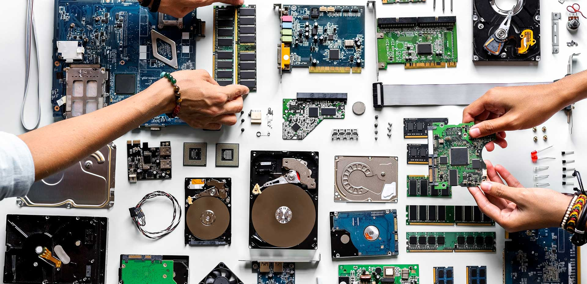

Arquitectura de Computadoras


Temario
- Unidad 1 Arquitectura de cómputo
- Módulos de Arquitectura
- Clásicas
- Segmentadas
- Multiprocesamiento
- Análisis de componentes
- Arquitecturas
- Unidad Central de Procesamiento
- Unidad Aritmética Lógica
- Registros
- Buses
- Memoria
- Conceptos básicos del manejo de la memoria
- Memoria principal
- Memoria caché
- Manejo de entrada/salida
- Módulos de entrada/salida
- Entrada/salida programada
- Entrada/salida mediante interrupciones
- Acceso directo a memoria
- Canales y procesadores de entrada/salida
- Buses
- Tipos de buses
- Estructura de buses
- Jerarquía de buses
- Interrupciones
- Unidad 2 Estructura y funcionamiento de la unidad central de procesamiento
- Organización del procesador
- Estructura de registros
- Registros visibles para el usuario
- Registros de control y estados
- Ejemplos CPU
- El ciclo de la instrucción
- Ciclo Fetch-Decode-Execute(FDE)
- Segmentación de instrucciones
- Conjunto de instrucciones
- Métodos de direccionamiento
- Unidad 3 Selección de componentes para ensamble de equipo de computo
- Chipset
- Unidad central de procesamiento
- Controlador del bus
- Punteros de entrada E/S
- Controlador de acceso directo a la memoria (DMA)
- Circuitos de temporización
- Circuitos de control
- Controlador de video
- Aplicaciones
- Entrada salida
- Almacenamiento
- Fuentes de alimentación
- Ambientes de servicio
- Negocios
- Industrial
- Comercio electrónico
- Unidad 4 Procesamiento paralelo
- Aspectos basicos de la computación paralela
- Tipos de computación paralela
- Clasificación
- Arquitectura de computadoras secuenciales
- Organización de direcciones de memoria
- Sistemas de memoria (compartida).Multiprocesadores
- Redes de interconexión dinámicas o indirectas
- Redes conmutadas
- Sistemas de memoria construida. Multicomputadores
- Redes de interconeción estáticas
- Casos de estudio